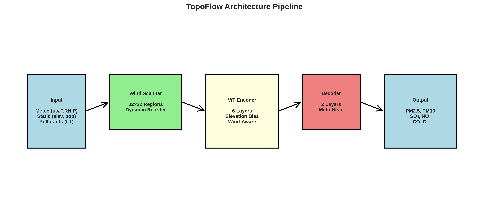

A Vision Transformer model for multi-pollutant air quality forecasting with wind-following attention and terrain-aware modeling.
TopoFlow extends the Vision Transformer with physics-informed components for atmospheric modeling.

TopoFlow architecture: Wind-guided patch shuffling with sector-based estimation, elevation-aware attention bias, and multi-pollutant prediction heads.
Physics-informed inductive biases for atmospheric transport modeling.
Patches are reordered based on wind direction, creating an inductive bias aligned with atmospheric transport (upwind → downwind).
Learnable α parameter modulates attention based on terrain elevation differences, capturing mountain blocking effects.
Simultaneous forecasting at 12h, 24h, 48h, and 96h lead times with a single forward pass.
Joint prediction of PM2.5, PM10, SO₂, NO₂, CO, and O₃ with shared representations.
Bucketed relative position bias for O(N) memory instead of O(N²), enabling large-scale training.
Built on PyTorch Lightning with clean APIs. Install with pip and start training in minutes.
Get started with TopoFlow in just a few lines of code.